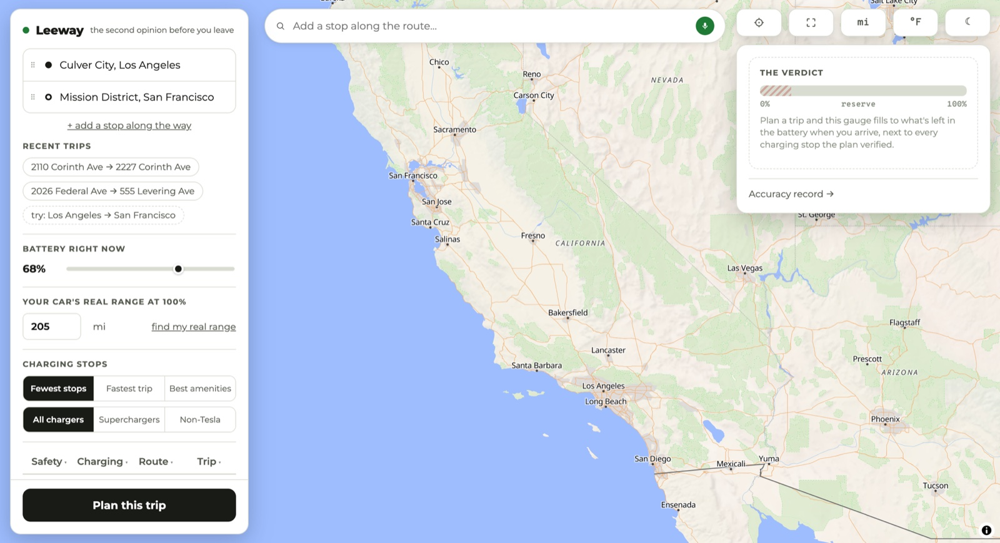
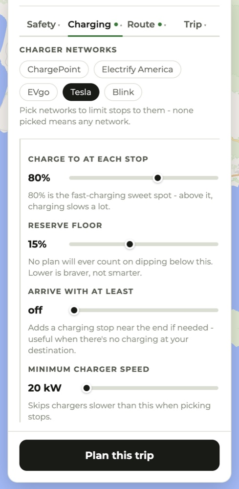
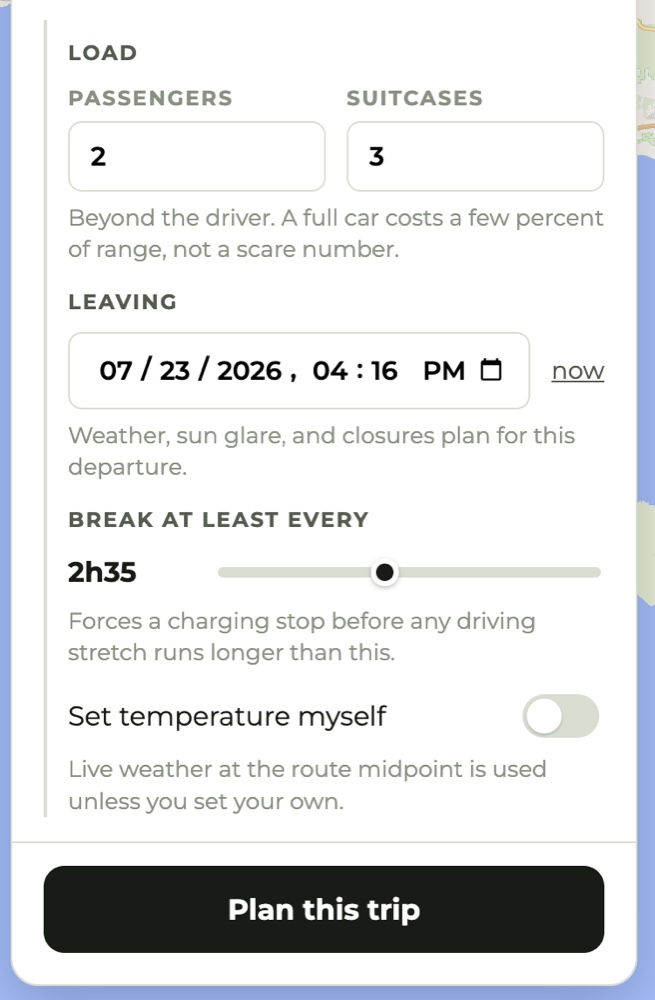

Find my real range
Don't know your car's true 100% range? Copy two numbers off the car's screen, battery % and the range it shows, and Leeway does the arithmetic. Every reading is dated, so the page doubles as a record of your pack's decline.
Every EV planner finds you a charger.
Leeway plans California road trips around the battery your car has today. Then it spends a budget you set, in minutes, on the hazards other planners route you straight through: the unsignaled crossing of a four-lane road, the left turn with no light, the rail line, the live Caltrans closure.

Four hazard types, each its own switch, with a detour budget in minutes. At +5 it avoids anything it can dodge for five minutes or less and warns you about the rest.
You give it the range your car shows at 100%. The Model 3 this was built around left the factory rated at 263 miles and now does 205. Plan from 263 and the second leg comes up short.
Tell it what the battery read when you arrived. It keeps a running record of predicted against actual, and tunes later plans toward your car.
"Add an In-N-Out after an hour of driving." Each result is priced by routing to the door and back out again, then subtracting the drive you were making anyway.
Start · the problem
A 2021 Model 3 Standard Range Plus was rated at 263 miles when it left the factory. Five years later the same car does 205. Batteries lose capacity as they age, and no two cars lose it at the same rate.
Most planners still work from the factory figure. They hand you a route with a charging stop you might not reach. Leeway starts at the other end: you tell it what your car does at 100% today, and it works out what will be left when you arrive.
Hence the name. What you get back is how much room you have when you get there, rather than a yes or a no.
↓ main screen
Three things get you a plan: where you're going, what your battery reads now, and what your car does on a full charge. The card on the right stays empty until you press Plan this trip. Then it fills with the arrival number, the gauge, and every stop in order.

↓ a real plan
Los Angeles to Santa Barbara, you'll arrive at
That is a 91-mile run by way of the Getty, and the arithmetic behind it is on the card: two stops, 2 h 49 min including about 48 minutes plugged in, 96 miles to spare, range adjusted for 84°F and calm wind. The verdict line reads Makeable with your reserve.
Under that sit the warnings it found on this route: a 9% grade descent that runs for a mile, with about 26 real bends after it, and a Caltrans lane closure on SR-2. It also reports what it already did about them, which was to reroute around two flagged spots for a combined four minutes.

↓ safety
Four hazards, each with its own switch: left turns across big roads, unsignaled crossings of 4+ lane roads, rail crossings, and active Caltrans construction. Next to them sits a detour budget. Set it to +5 minutes and Leeway routes around any flagged spot it can avoid for five minutes or less. Anything costlier than that, it warns you about and leaves alone.
That +5 is the default, not flag-only. Someone who never opens the options still gets steered around the hazards that are cheap to avoid.
Traffic signals, lane counts and rail level crossings come from OpenStreetMap. Closures come from the Caltrans feed. The turn geometry is measured off the route polyline itself. The detour at the top of this page came out of those three.
It does not reroute for everything. Steep descents, twisty sections, sun glare and strong wind get a warning and nothing more. And on the days when the OpenStreetMap servers are struggling, a hazard check gives up rather than hold up your plan, which means a flag can go missing.

For each hazard below: ON = route around it when the detour adds 5 minutes
or less, otherwise warn about it. OFF = don't check for it.
↓ four tabs
The defaults are already the cautious answer, so the tabs are there for the times you disagree. Every control states plainly what it does and what it costs you. A collapsed tab shows a green dot when something inside it differs from the default, so it can never hide a setting you changed.



80% is the fast-charging sweet spot - above it, charging slows a lot.
No plan will ever count on dipping below this. Lower is braver, not smarter.
Beyond the driver. A full car costs a few percent of range, not a scare number.
↓ finding a stop
Type or speak into the bar above the map. "Add an In-N-Out stop after one hour of driving." Leeway reads the sentence, including the budget buried in it. "Won't add much time" means five minutes. "I don't mind a longer detour" means twenty.
Then it prices them. "adds 4 min" is a routed figure: Leeway drives you to the door and back out to your destination, then subtracts the trip you were making anyway. Results are ordered by what they cost you. If nothing fits your budget it says so instead of quietly widening it.
Press add and the place becomes a real waypoint in the route list, ready to drag into a different order or drop entirely.

↓ for the road
The trip card cuts the plan down to what you need at a glance behind the wheel. Leave with 68%. The Getty at 3 miles. The Supercharger at 60 miles, where you arrive at 25% and charge to 80%. Then 28 miles to arrive at 62%. No map, no controls, nothing to scroll. It is built to be screenshotted, because your car's screen can't open a web app.

Any single stop can also go out as a maps link, which the Tesla app and most navigation apps accept.
The next time you open Leeway it asks how the trip went, and puts what happened next to what it promised.

Those answers do more than keep score. After three or more substantial trips, Leeway starts correcting its own estimates toward what your car does, weighted toward recent drives and deliberately cautious. A car that turns out hungrier than predicted gets the full correction. One that does better gets half, and never enough to make a plan bolder than the stock estimate. When that correction is running, the plan says so.
The same care shows up in smaller places. Sample trips are labeled "try:" so nobody mistakes them for their own history. When the routing quota runs out, the verdict says planning couldn't run rather than echoing your starting battery back as though it were an answer. A failed search says the search failed, so you don't go hunting for a typo.
A suggestion pretending to be your history would be a small lie, and this
product doesn't do those.
↓ the rest of it
Don't know your car's true 100% range? Copy two numbers off the car's screen, battery % and the range it shows, and Leeway does the arithmetic. Every reading is dated, so the page doubles as a record of your pack's decline.
A proper night theme, down to its own night basemap.
Switched independently, right on the map.
Your last routes sit one tap under the address fields. On a first visit you get clearly labeled sample trips instead.
"See other routes" compares real corridors, I-5 against the 101 against the 99, then replans along whichever you pick.
Don't like a charger it chose? Skip it, and the plan gets rebuilt around the ones you'll use.
Click the map to drop a waypoint anywhere. Drag any point past any other to reorder, start and destination included. Three stops maximum, on purpose: past that you're planning a tour, not a drive.
When the usual geocoder only finds the street, Leeway falls back to the US Census one, which can place the number.
Say when you're leaving. The weather becomes that hour's forecast, sun glare computes for then, and closures filter to what will still be active.
"Break at least every 2h35" plans stops for the driver rather than the battery, for the trips where the driver runs out first.
Hover a stop for its network, peak kW, stall count, price where it's known, a photo if one exists, and a link out to Google Maps.
Superchargers are blue circles, other fast chargers orange diamonds, your own stops gray, hazards amber triangles pointing at the spot.
Every predicted-versus-actual trip you log, side by side, with no favorable rounding. Leeway shows you its own misses.
One tap makes your current location the origin, used once and never stored.
Any stop goes out as a maps link, which the Tesla app accepts.
No sign-up, no analytics, no ads. Your range, preferences and trip history stay on your device.
↓ on your phone
Leeway is a progressive web app. Open it in a phone browser, add it to your home screen, and it launches full screen with its own icon. The phone layout gives the map most of the screen and puts the controls underneath.
There is also a native iOS build, the same app in a Capacitor shell, which adds three things a website can't do. It schedules a local reminder to log how the trip went once you should have arrived. It opens the native share sheet, so a charging stop can go straight to your car's app. And it matches the status bar and safe areas to your theme.
Leeway makes no offline claim, because it could not keep one. Every plan needs live routing, charging and weather data.
Arrive · what it's built on
Leeway is free, runs on free infrastructure, and has no business model. It covers California for now.